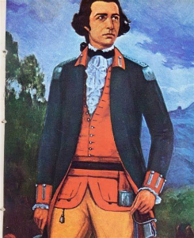

Quem foi Tiradentes?
Joaquim José da Silva Xavier, conhecido por muitos como Tiradentes, nasceu em 1746, em Minas Gerais. Apesar de ter nascido em uma família com muitas posses, a morte de seus pais tornou sua vida mais difícil. Assim, desde a juventude se dedicou a vários trabalhos, como comércio, mineração e até mesmo como dentista amador, o que lhe rendeu o apelido de Tiradentes.
Além dos trabalhos que fazia, também ficou conhecido pela carreira de militar. Tiradentes foi alferes da Cavalaria de dragões reais de Minas, e apesar desse militarismo e da subordinação à coroa, alguns anos depois Tiradentes se rebelou contra a mesma coroa no evento que conhecemos como: a inconfidência mineira.
